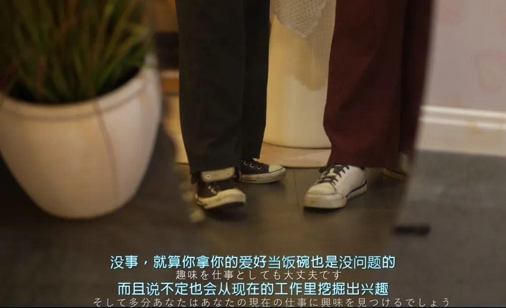

这周的事情未免也太多了一点。虽然单个一两件地来看没多少，但是为此做出的劳动不管是从体能上还是心理上，都确凿地消耗着每天。
长沙已经进入了梅雨季节。我已经很久没有这么长时间地在三月的时候待在长沙了。出门，路旁的山茶花已经开了又谢。我在雨天抓了一些路上打着伞的行人。
说是一些的话好像有点少。因为也有那么几个。蒙版了一下没有去扣，直接笔刷把颜色都刷了出来。
家门口的这条路，扫来扫去已经快被我扫烂了吧。这里或者那里的。好多角度也都在不同的天气里拍到过。
紅樓夢裡 形容軟煙羅的顏色叫雨過天青，是一種紗帳面料。三月的雨，悄然潛入長沙。那想來這種調色也許可以叫 箬笠抽煙

街边扫了扫。以往我有很在意构图和某一时间的光影选择。但偶尔在非正常角度拍出来的也挺好看。于是我开始不刻意每次都必须看取景框。
曾经有一段时间我觉得我出片的质量有所下降，那大概是之前在主武器是手机的时候，我随手降低或者拿出来用了各种角度来架构一张图片。所以之前有段时间的作品看起来比较苍白或者说平淡，那是我还没有找到一个合适的视角构图。现在也没有很完美地把我审视生活的视角用镜头完全表达出来，但又在往一个我认为合理的道路上走。视觉艺术也是一种自由意志。色彩也是情绪的体现，也和文字一样是自我收纳

调了一下颜色。由暗色到明亮地来安排吧。原来想取的名字是恋爱前中后，但是鉴于相关的经历最近实在是无中生有。所以看客鱼粉们爱怎么取名字就怎么取喏
口罩不是所有人都能带得住的，这是一个思维认知和人体功学的交叉命题。我在街边看到太多了，多也有等载客的摩的司机。想明白这个典型并不难，但我想说的是很多时候一种新鲜思维或者产品在落地时候的那些我们称之为“解放”的事情：一场思想解放、一次生产力解放。
我不是说什么东西新的就会好或者就会差，那自有规律去适应或者淘汰。我想说的重点是，改变是需要催动的。停滞是更容易的选择。
朋友说和我对话，有时候很像那种我在票圈发的截图。截图来自日剧、韩剧、美剧或者什么，总是很剧场melodramatic情景剧里的drama queen。于是我尝试了一些把我自己拍的图、我和朋友对话的记录、谷歌翻译出来的结果、FIX的字幕风格组合在了一起。
不过要事先声明的是：谁家的孩子谁抱走。我说的中文和拍的图归我负责；至于字幕设置PPT仿妆和一些翻译的诡异，我只接下批评但是不会去修改的（因为在我眼里更像是一些符号）

最后，给眼馋的朋友看一眼长沙的米粉。烫一下你的舌头
卖菜的理由在于：1. 动作娴熟、看上去十分爱惜菜；2. 左边的泡沫板应该对着客人；3. 摆放菜的时候菜兜对着客人，菜叶子对着自己；4. 左边是过道，右边站老板；5. 手指上的茧也许是搬菜箱子留下来的；6. 评论区大多认为是卖菜的。买菜的理由在于：1. 这手是我的，我是买菜的；2. 大家都猜卖菜，我来对冲猜买菜。